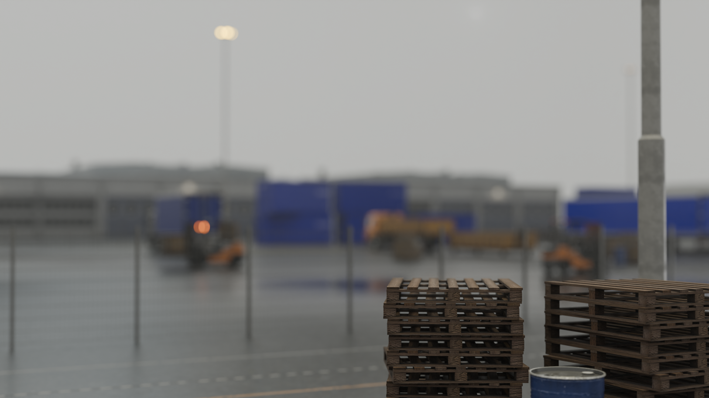
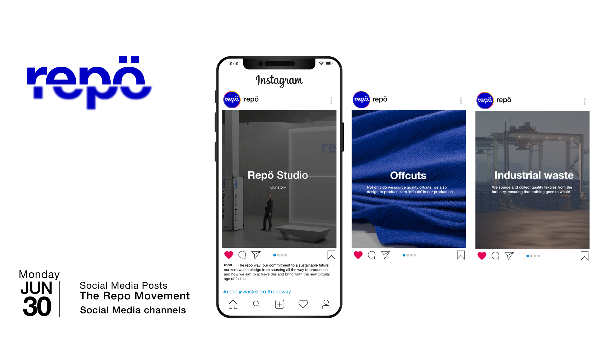
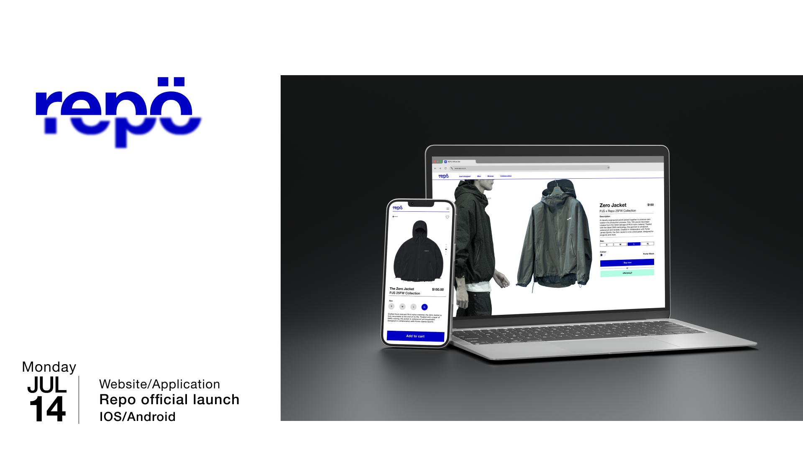
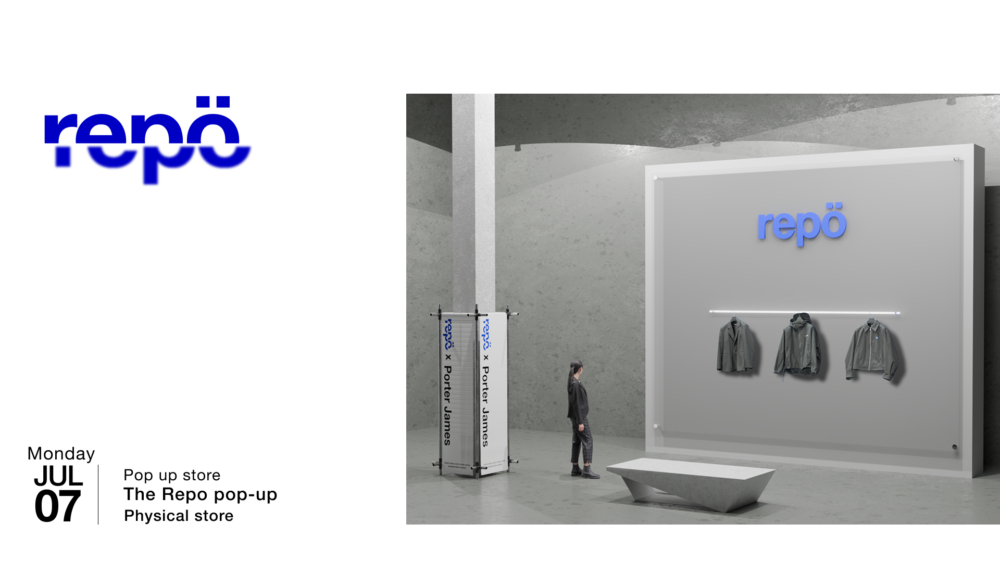

Repo Academic project
Medium
Year
Category
Role
Project description
2D | 3D | Footage | Cel
2025
Branding + Brand Film
Filming
Branding
Design
Conceptualisation
Illustration
Animation
Repo is a fictional brand designed to address the problematic waste created by the fashion industry. Despite the increasing annual production of 100 billion garments, the fashion industry still fails to provide Gen Zs with sustainable clothing that are fashionable. Rather than recycling inferior worn clothing, Repo sources high quality offcuts that often go to waste to create curated, limited collections. Footage, 3D, 2D and Cel animation were combined to create a sophisticated, contemporary twist to draw a parallel with the brand’s bold, disruptive philosophy.
Components
Visual rationale
3D Assets - Blender
Cel Animation - Human touch + craft
Footage - Grounding in reality
2D Assets - Personality + variety
With the rise of AI enabled automation, Repo’s visual direction is a contemporary interpretation of mixed media- a style synonymous with quality, human craft. By blending 3D realism, traditional cel animation, processed footage and 2D animation through colour, the brand film mirrors its manufacturing philosophy of the intentional assembly of different materials into a cohesive, quality garment.

Wireframe renders




Creative media strategy
A comprehensive brand launch was planned out as a multi touchpoint strategy. This ecosystem includes a mission driven social media carousel, a branded web/app UI, and a conceptual 3D pop up location
Designed to disrupt the common bias that sustainable fashion is unfashionable, Repo replaces the ‘green’ cliche with an unapologetically bold yet minimal identity. The brands look is defined by a striking cobalt blue and is paired with a bold, geometric slab serif typeface.
The script was intentionally kept concise to maintain Repo’s bold tone, prioritising the delivery of essential context without the clutter.
The Repo wordmark is a literal visualisation of the brand’s circular ethos. Inspired by the garment construction process and sewing patterns, the word mark is bisected and offset- symbolising the deconstruction of textiles and its reassembly into a new, elevated form.
Branding Bold Minimalism
Storyboard Brand Film
Styleframes Static
Logo Wordmark